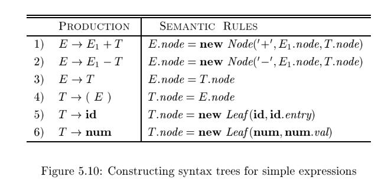

5.3 Applications of Syntax-Directed Translation#
The syntax-directed translation techniques in this chapter will be applied in Chapter 6 to type checking and intermediate-code generation. Here, we consider selected examples to illustrate some representative SDD's.
The main application in this section is the construction of syntax trees. Since some compilers use syntax trees as an intermediate representation, a common form of SDD turns its input string into a tree. To complete the translation to intermediate code, the compiler may then walk the syntax tree, using another set of rules that are in effect an SDD on the syntax tree rather than the parse tree. (Chapter 6 also discusses approaches to intermediate-code generation that apply an SDD without ever constructing a tree explicitly.)
We consider two SDD's for constructing syntax trees for expressions. The first, an S-attributed definition, is suitable for use during bottom-up parsing. The second, L-attributed, is suitable for use during top-down parsing.
The final example of this section is an L-attributed definition that deals with basic and array types.
5.3.1 Construction of Syntax Trees#
As discussed in Section 2.8.2, each node in a syntax tree represents a construct; the children of the node represent the meaningful components of the construct. A syntax-tree node representing an expression $E_1 + E_2$ has label + and two children representing the sub expressions $E_1$ and $E_2$.
We shall implement the nodes of a syntax tree by objects with a suitable number of fields. Each object will have an op field that is the label of the node. The objects will have additional fields as follows:
- If the node is a leaf, an additional field holds the lexical value for the leaf. A constructor function
Leaf (op, val )creates a leaf object. Alternatively, if nodes are viewed as records, thenLeafreturns a pointer to a new record for a leaf. - If the node is an interior node, there are as many additional fields as the node has children in the syntax tree. A constructor function
Nodetakes two or more arguments: $Node(op, c_1, c_2, c_3, \dots, c_k)$ creates an object with first fieldopand k additional fields for thekchildren $c_1, c_2, c_3, \dots, c_k$.
Example 5.11 : The S-attributed definition in Fig. 5.10 constructs syntax trees for a simple expression grammar involving only the binary operators + and -. As usual, these operators are at the same precedence level and are jointly left associative. All nonterminals have one synthesized attribute node ,
which represents a node of the syntax tree.
Every time the first production $E \to E_1 + T$ is used, its rule creates a node with + for op and two children, $E_1.node$ and $T.node$, for the sub expressions. The second production has a similar rule.

For production 3, $E \to T$ , no node is created, since $E.node$ is the same as $T.node$. Similarly, no node is created for production 4, $T \to (E)$. The value of T.node is the same as E.node, since parentheses are used only for grouping; they influence the structure of the parse tree and the syntax tree, but once their
job is done, there is no further need to retain them in the syntax tree.